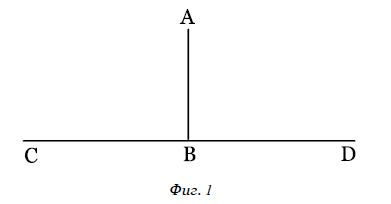
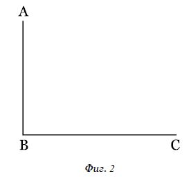

Беседа 1545 от 3877 · Беинса Дуно
Проява, връзка и причина
Т. м.
Чете се темата: Влиянието на въздуха и на водата върху живите организми.
Изпейте песента: „В начало бе Словото”.
В първа глава от Евангелието на Иоана е казано: „В начало бе Словото, и Словото бе у Бога, и Словото бе Бог.” Преведен на съвременната логическа мисъл, този стих означава: Проява, връзка и причина. В началото бе Словото – това означава проява на нещата. „И Словото бе у Бога” – връзка междунещата. „И Словото бе Бог” – причина на нещата. Следователно, когато човек се проявява добре в живота си, това е Словото, което действува в него. Когато пребъдва в Бога, човек е свързан вече с Него. Щом Словото влезе в човека, той е дошъл до причината на нещата. Когато Бог се проявява в човека, това е едно положение. Когато човек образува връзка с Бога, това е второ положение. И най-после, когато Бог изявява същината си в човека, имаме трето положение. Отношението на Бога към човека и на човека към Бога геометрически представя две прави линии, перпендикулярни една към друга – черт. 1.


Следователно, когато се казва, че човек трябва да използва живота, разбираме да използва добрите условия, които Бог му е дал. Не използва ли добрите условия на живота, като права реакция, ще дойдат лошите, като обратна реакция. Защо е така, никой не знае. Закон е, обаче: на всяка права реакция отговаря обратна. В този смисъл, ако не живее разумно, човек се намира пред опасността да изгуби добрите условия. Най-голямото благо, дадено на човека, това е животът. Няма по-велико нещо за човека от възможността да живее.
В древността един учен човек бил осъден на смърт. След голяма борба между неговите приятели и неприятели, да го спасят по някакъв начин, най-после съдът решил: Този учен може да бъде помилван при условие да тури на главата си гърне, пълно с мляко, и да обиколи града с него, без да излее една капка от млякото. Ако изпълни задачата си добре, животът му ще бъде подарен. Той изпълнил задачата си точно, както изисквали съдиите – капка мляко не разлял. След това съдиите го запитали: Какво видя в града? – Нищо не видях. Мисълта му била силно концентрирана. Той мислел само за едно: да обиколи града с гърнето на главата си, без да разлее една капка от млякото и да се върне при ония, в чиито ръце е бил неговият живот. Това значи концентриране на мисълта.
Като ученици, вие трябва да държите в ума си своята свещена, Божествена идея и с нея да обиколите цял град, без да виждате, какво става около вас. Държите ли се здраво за своята свещена идея, вие ще бъдете чужди за дребнавостите на живота. Вие ще минавате и заминавате край тях, без да ги виждате. Не се ли държи здраво за Божественото в себе си, човек постепенно губи светлите лъчи на изгряващото слънце от очите си, докато един ден изгуби всичките лъчи и в съзнанието му настава мрак и тъмнина. Защо? Изгубил е добрите условия на живота. Изгуби ли тия условия, страданията и недоволството идат. Колкото благоприятни условия е изгубил човек, толкова страдания му дохождат. Мине ли през последното страдание, той започва отново да се качва по възходящата линия на своя живот.
Дойде ли отново до възходящата линия на живота си, човек трябва да приложи своята разумност и любов, да върви правилно, да не губи благоприятните условия на своя живот. Като работи върху себе си, човек трябва да приложи любовта си, да не очаква другите да го обичат. Щом свърши дадена работа и се намери пред някакъв резултат, човек може вече да се надява на любовта на окръжаващите. Значи, докато не приложи своята свещена идея в живота си и не види някакъв резултат, човек не може да изисква любовта на хората. Изгуби ли това условие, ще дойде обратната реакция. Който използва добрите условия, той ще бъде богат човек; не може ли да ги използва, той ще се намери в крайна сиромашия. Тогава ще го нападат кредиторите му и, като не може да плати дълговете си, ще го ругаят, ще го мъчат и изтезават. Дойдат ли при богатия, кредиторите ще се поклонят учтиво и ще чакат. Той ще ги покани да седнат, ще извади кесията си и ще им плати дълга си, с лихвите заедно. Те ще му благодарят и ще кажат: Ето един благороден човек.
Като знаете това, бъдете внимателни към задълженията си. Не оставяйте други да плащат заради вас. Не очаквайте другите хора да работят за вас. – Ама Бог може да направи всичко за нас. – Той е направил най-важното: дал ви е условия. Бог ви е дал ум, сърце и воля. На вас е възложил задачата да работите върху ума, сърцето и волята си и чрез тях да усъвършенствувате своята форма – тялото си. Щом формата е съвършена, и съдържанието и ще бъде съвършено. Това значи, да работи човек съзнателно за себе си, за ближните си и за Бога. Работи ли само за себе си, той е осъден на смърт. Кой човек, кое семейство, кое общество или коя държава, като са работили за себе си, са оцелели до днес? Обаче, всички отделни личности, семейства, общества и народи, които са работили за Бога, са записани в свещената книга на живота. Техните имена се четат от всички.
Христос казва: „Радвайте се, че имената ви са записани на небето.” Ако имената ви са записани на небето, радвайте се на мнението, което съвършените същества имат за вас, а не на мнението на хората. Радвайте се и веселете се, ако името ви е написано на дланта на Онзи, Който ръководи съдбините на целия свят. Ще кажете, че правите усилия да бъдете добри. Това е празна работа. По естество човек е добър, няма защо да прави усилия да бъде добър. От човека се иска да прояви доброто в себе си, да не затваря неговия път. Не даде ли път на доброто в себе си, човек става лош. Там е грешката на човека. Щом даде път на Божественото в себе си, всички енергии в човека потичат навън, и той става проводник на доброто. Доброто в човека представя здрава, чиста, лесносмилаема храна, а злото – нечиста, мъчносмилаема храна. Тъй щото, искаш ли да проявиш доброто в себе си, приемай в стомаха си само такава храна, която хармонира с твоето тяло, в ума си – само такива мисли, които хармонират с твоя ум и в сърцето си – само такива чувства, които хармонират с твоето сърце.
„В началото бе Словото.” След като мислил цяла вечност, най-после Бог се проявил чрез Словото, т.е. чрез разумността. Започнете и вие с разумността, със Словото на Бога. После Бог е довел всички неща до една велика цел – велика връзка, велика хармония на живота. Най-после всичко това трябва да бъде за слава и величие на Бога и на ония същества, които живеят в Неговото царство. Така трябва да постъпва всеки човек. Каквато работа предприема, първо трябва да я обмисли и после да си отговори за кого я прави и как трябва да я направи. Обичаш ли някого, трябва да знаеш, защо обичаш; обичат ли те, също трябва да знаеш, защо те обичат. Няма по-голямо нещастие за човека от това, да не знае, защо обича и защо го обичат. Някой иска Бог да го обича, но не знае, защо иска тази любов. Той пък обича Бога от страх. Обичайте със свещен трепет на душата си, да се слеете с любовта на Великия. Мислете със свещен трепет на ума си, да свържете мисълта си с Великата мисъл на Бога. Чувствувайте със свещен трепет на сърцето си, да се свържете с Общия пулс на живота. Работи ли по този начин, човек има ясна представа за това, което иска да направи. Не се ли ръководи от тия принципи, той нарушава Божествения ред на нещата и създава свой специфичен ред, който е причина за нещастията в света. Животът на сегашните хора представя редица от положения и предпоставки, които човек е поставил на пътя на Божественото, с което го ограничил. Тази е причината за големите нещастия и противоречия в човешкия живот.
Като говорим, че всеки човек трябва да има поне една свещена идея, това не значи, че той може да я реализира изведнъж. Десетки, стотици, а понякога и хиляди години са нужни, за да може човек да реализира една велика идея. Запример, колко години са нужни на човека, докато свърши образованието си на физическия свят? Четири години са нужни за първоначалното училище, три години – за прогимназия, пет – за гимназия, четири – за университет – всичко 16 години. Това представя едно малко образование в сравнение с онова, което му предстои да мине в по-високите светове. Колкото да учи на земята, човек занася със себе си една малка част от знанието, което прибавя към това, което носи от миналото си. Съвременният човек не вярва в минало съществуване. Дълго време трябва да го убеждавате, за да приеме, че е съществувал някога и носи със себе си способности и дарби на миналото си, върху които е работил и продължава да работи.
Като срещнат човек с високи идеи, хората започват да му се подиграват, че вървял на високо. Всеки човек трябва да бъде свободен да се развива, както той разбира. Не се месете в чуждите работи. Както растенията се нуждаят от свобода, така и човек трябва да бъде свободен. За да не се преплитат корените и клоните на дърветата един в друг, те трябва да бъдат на известно разстояние, да не си пречат. За да се развива правилно и да устоява на бури и ветрове, дървото трябва да има известна височина на която да отговаря известна дебелина. И човек, за да се развива правилно, трябва да има определена височина и дебелина. За да придобие тези неща, в помощ му дохождат великите принципи на живота – любовта, мъдростта и истината. Любовта внася в него топлина и го кара да се развива на широко; мъдростта внася светлина и го прави висок; истината закръглява формата. Истината е съединителна връзка между топлината и светлината, между чувствата и мислите на човека. Ако човек не е достатъчно висок, това показва, че не е работил с мъдростта; ако не е достатъчно широк, той не е работил с любовта; ако не е достатъчно закръглен, не е приложил истината. Ако не е дал място на истината в себе си, човек не може да постигне своите стремежи. Чувствата и мислите в него остават разпръснати, без съединителна връзка. Всяко чувство трябва да бъде подкрепено от една мисъл; и всяка мисъл трябва да бъде подкрепена от едно чувство. Това подразбира връзка между мислите и чувствата на човека. Истината внася подтик в човека. Без истината няма движение. Земята и слънцето се движат благодарение на истината. Тя ги тласка към тяхната велика цел. Същото се отнася и до човека. Всеки момент, той се движи в своите мисли и чувства, отива към великата цел на своя живот. Измени ли някъде посоката на своето движение, или се отклони малко от своя път, човек се намира пред катастрофа. Съществата, които управляват планетите, трябва да бъдат съсредоточени в мисълта си, да не се отклоняват. Увлекат ли се в някаква велика мисъл, движението на планетите се изменя. Това отклоняване от пътя им създава катастрофа на всички низкостоящи светове. Като знаете това, за да не се отклонявате от своята орбита, не се ровете в постъпките на хората. Давайте си едни на други свобода, да не се преплитат корените и клоните ви. Кой как живее, това е негова работа – не съкращавайте разстоянието помежду си. Ама картината на еди-кого си не е хубава. Той сам ще я изправи. Друг е въпросът, ако той сам извика някой свой приятел, художник, и го помоли да се произнесе за картината му. Докато не искат вашето мнение, не бързайте да се произнасяте.
Съвременните хора се стремят към свобода. Всеки иска да бъде свободен, но само за себе си. Той не позволява да се месят в работите му, но сам се меси в чуждите работи. Като види, че някой не постъпва правилно, той веднага го изобличава, прави му бележки. Вместо да изправи грешката му, той повече го обърква. Всеки иска да бъде учител на другите, да го учи, как да постъпва. Не бъдете учители на хората. Не давайте мнението си, преди да са го искали. Бъдете учители само на себе си. Това е ваше право. Никой не може да отнеме правото ви да се учите, да се самовъзпитавате. Дайте свобода на себе си, дайте свобода и на ближните си. Имате ли тази свобода, вие ще бъдете силни, да понасяте мислите и чувствата на обкръжаващите. Бъдете свободни и не бързайте. Искате ли бързо да постигнете нещо, вие ще изкарате недоносче. Определено е за колко време може да се реализира една идея.
Днес говоря за онези от вас, на които съзнанието е пробудено. Не е ли будно съзнанието им, те ще слушат, но мъчно ще разбират. Като казвам, че никой никого не може да оправи, имам предвид хора с непробудено съзнание. Онзи, на когото съзнанието е будно, сам се изправя. Преди да видят другите хора грешката му, той вече я изправил. Мъчно се изправя човек с обикновено съзнание. Как ще накарате котката да не върви след рибаря? Рибарят носи пълна мрежа с риба, а котката върви след него. Той и говори, че рибата не е за нея, но тя не иска да знае и си казва, че и тя има дял от рибата. Както котката постъпва с рибата, така човек постъпва с Провидението. Той върви след Провидението и му говори: Виж, колко е богат този човек, а отгоре на това има две-три къщи. Защо не дадат и на мене една къща? Казвам: Той не подозира, че ако му дадат една къща, ще се спъне в пътя си. За да стане учен, да придобие знания, човек трябва да бъде беден. Има ли къща, той не може да учи. – Поне да се оженя, да имам едно-две деца, че тогава да уча. Ожениш ли се, родят ли се две-три деца, ти още по-малко ще учиш. По цели дни ще слугуваш на жена си и децата си и няма да учиш. – Ама самотен съм. – Докато си самотен, ти си свободен, имаш време да се учиш, да се молиш, да служиш на Бога. Човек трябва да бъде вътрешно свободен. Аз говоря за вътрешната свобода на човека, а не за външната. Щом е вътрешно свободен, и като женен и неженен, човек може да учи, да служи на своя идеал.
„В началото Бе Словото.” Това значи: всяка човешка проява трябва да бъде разумна, да има вътрешно съдържание и свобода. Чувствата представят вътрешното съдържание на постъпките. Без чувства постъпките на човека са разхвърляни, връзка няма между тях. Всичко, което човек прави, е добро, но все още нещо му липсва. Добре е да се жени човек, да има деца, но той трябва да разбира смисъла на женитбата. Добре е човек да е свършил известна наука, да има диплом, но дипломът трябва да отговаря на знанието му. Добре е човек да бъде мъдрец, но да има светлината на мъдреца. Човек трябва да бъде свободен, да знае, на какво разстояние да поставя нещата, и оттам да ги разглежда. Поставите ли един предмет близо до очите си, ще видите само част от него. Каква представа ще имате за този предмет? Поставете предмета на такова разстояние от себе си, да го виждате ясно, и тогава се произнасяйте за него. Има едно геометрическо и математическо разстояние, отдето човек вижда предметите ясно. Ако днес хората не разбират Божествените идеи, ако не се разбират и обичат помежду си, това показва, че не са застанали на мястото, отдето нещата се осветяват и виждат добре. – Не ме обичат хората. – Не си застанал на определеното място. – Обичат ме хората. – Застанал си на определеното място. Който не е застанал на определеното място, той винаги остава неразбран.
Сегашните хора се оплакват, че никой не ги разбира. Прави са. Вътрешно разбиране е нужно на хората. Имат ли това разбиране, те лесно ще се справят с мъчнотиите си. Каква по-голяма радост може да изпита човек от тази, след като е гладувал три-четири дена, без да каже на някого това, да срещне един свой приятел, който го завежда у дома си и го угощава добре? Приятелят влиза в положението му и веднага му се притича на помощ. Ще дойде ден, когато хората ще се разбират, без да си говорят. Тогава те ще познаят и разберат Божия Промисъл. И днес, обаче, не се иска много, за да види човек, как Бог работи в света. Дойдете ли до някаква мъчнотия, изменете мисълта и чувството си, които в този момент ви притесняват, и помощта веднага ще дойде. Докато живее със старите си разбирания и възгледи за живота, човек мъчно ще се освободи от страданията си. Време е вече да приемете новата мисъл, новите чувства и новите постъпки. Иска ли да бъде здрав, човек трябва да мисли за здравите хора. Иска ли да бъде учен, той трябва да се свърже с учените. Иска ли да бъде богат, той трябва да мисли за богатите. Изобщо, за каквото човек мисли, такъв става.
„В началото бе Словото, и Словото бе у Бога, и Словото бе Бог.” Разберете дълбокия смисъл на тия думи и ги приложете в живота си. Можете ли да ги приложите, животът ви ще се измени коренно. Нов живот, нови разбирания, нови мисли и чувства, нови постъпки са нужни на хората. Само по този начин умът, сърцето и волята на всички хора ще вземат направление към великата цел на живота.
Проявената Божия Любов, проявената Божия Мъдрост и проявената Божия Истина носят пълния живот.
47. Лекция от Учителя, държана на 16 юли, 1930 г. София – Изгрев.